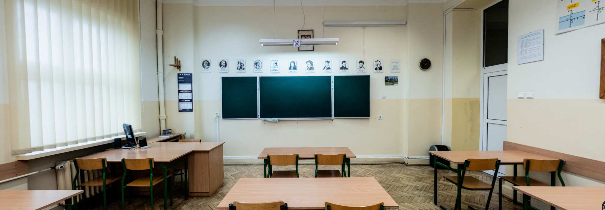

Sala 301 jest jedną z najbardziej wyjątkowych w całej szkole, znajduje się w niej niezbędne narzędzie do pracy kółka robotycznego
Jest nim router TP-Linik WDR4300, który za pomocą technoologii 5GHz przesyła dostęp do mistycznej sieci eterycznej 18 LO na strych
Powrót na stronę główną